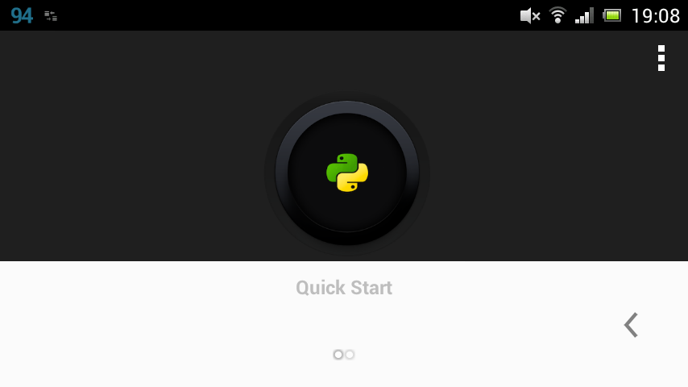
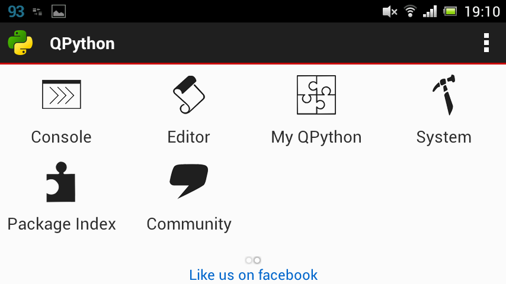
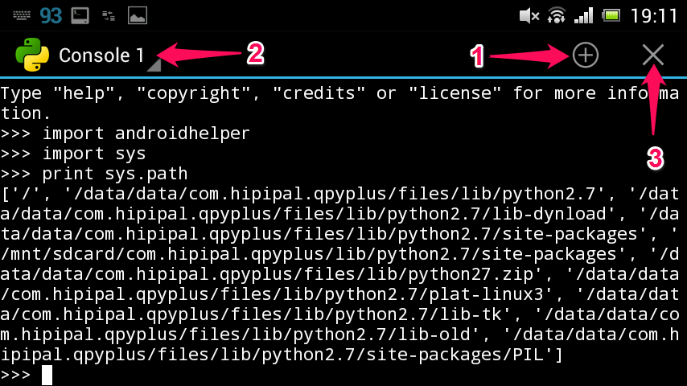
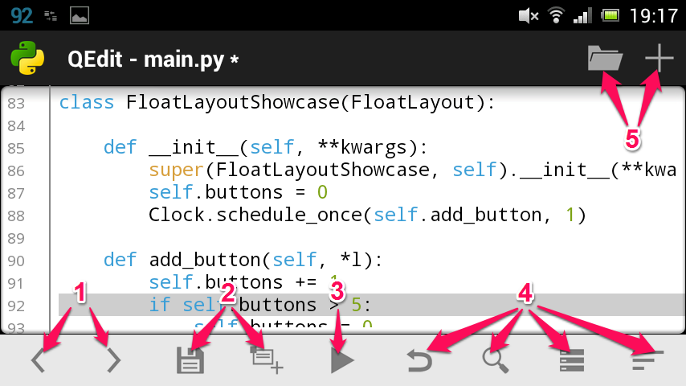
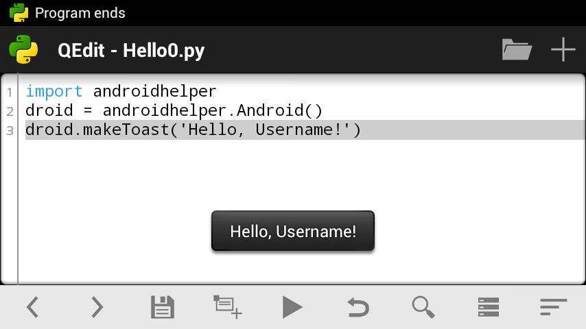
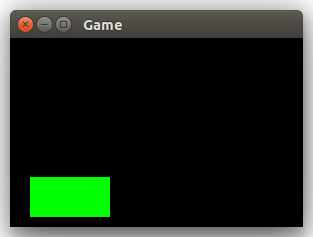
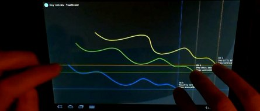

- App scaricabile dallo store Android
- Gratuita ed open source
- Supporta Python 2
- Include ed estende Py4A, per l'accesso al dispositivo
- Include vari moduli, tra cui Kivy
- QPython3 supporta Python 3
- Include Py4A
- Ma pochi altri moduli

Michele Tomaiuolo
Ingegneria dell'Informazione, UniPR




Preferibile -- chiaramente -- l'uso di una tastiera fisica
In alternativa, QPython include un server FTP sul cell/tablet

import androidhelper
droid = androidhelper.Android()
respond = droid.dialogGetInput(
"Hello", "What is your name?")
print respond
name = respond.result
if name:
message = 'Hello, %s!' % name
else:
message = "Hey! And you're not very polite, %Username%!"
droid.makeToast(message)
ActivityResult, Android, ApplicationManagerBatteryManager, BluetoothCamera, CommonIntents, ContactsEvent, LocationMediaPlayer, MediaRecorderPhone, PreferencesSensorManager, Settings, SignalStrengthSms, SpeechRecognitionTextToSpeech, ToneGeneratorUi, WakeLock, WebCam, Wifi
from kivy.base import runTouchApp
from kivy.uix.textinput import TextInput
t = TextInput(text='Hello, world', multiline=True)
runTouchApp(t)
BoxLayout(orientation='horizontal')BoxLayout(orientation='vertical')GridLayout(cols=4)Widget
from kivy.app import runTouchApp, stopTouchApp # ...
class Notepad(BoxLayout):
def __init__(self):
BoxLayout.__init__(self,
orientation='vertical')
txt = TextInput(text='Hello world',
multiline=True)
btn = Button(text='Quit', size_hint_y=None)
btn.bind(on_release=lambda btn: stopTouchApp())
self.add_widget(txt)
self.add_widget(btn)
if __name__ == '__main__':
runTouchApp(Notepad())

class Notepad(BoxLayout):
def __init__(self):
BoxLayout.__init__(self,
orientation='horizontal')
txt = TextInput(text='Hello world',
multiline=True)
b1 = Button(text='Open')
b2 = Button(text='Save')
b3 = Button(text='Exit')
b3.bind(on_release=lambda btn: stopTouchApp())
bar = BoxLayout(orientation='vertical',
size_hint=(None, None), pos_hint={'top': 1})
bar.add_widget(b1); bar.add_widget(b2); bar.add_widget(b3)
self.add_widget(txt); self.add_widget(bar)

from kivy.base import runTouchApp # ...
class GameWidget(Widget):
def __init__(self):
Widget.__init__(self)
with self.canvas:
Color(0, 1, 0)
Rectangle(pos=(20, 10),
size=(80, 40))
if __name__ == '__main__':
runTouchApp(GameWidget())

class GameWidget(Widget):
def on_touch_down(self, touch):
print(touch.x, touch.y, touch.uid)
def on_touch_move(self, touch):
print(touch.x, touch.y, touch.uid)
def on_touch_up(self, touch):
print(touch.x, touch.y, touch.uid)
http://kivy.org/docs/guide/firstwidget.html
class GameWidget(Widget):
def __init__(self): # ...
self._x = 20
Clock.schedule_interval(self.advance_game,
1 / 30)
def advance_game(self, dt):
self._x += 5
if self._x > 200: self._x = 20
self.draw_game()
def draw_game(self):
self.canvas.clear()
with self.canvas:
Color(0, 1, 0)
Rectangle(pos=(self._x, 10), size=(80, 40))
https://github.com/tomamic/fondinfo/blob/master/arena/bounce_kivy.py

class GameWidget(Widget):
def __init__(self): # ...
self._kbd = Window.request_keyboard(
self.kbd_closed, self)
self._kbd.bind(on_key_down=self.kbd_down)
def kbd_closed(self):
print('My keyboard have been closed!')
self._kbd.unbind(on_key_down=self.kbd_down)
self._kbd = None
def kbd_down(self, kbd, keycode, text, modifiers):
print('Key pressed:', keycode, text, modifiers)
if keycode[1] == 'escape': # keycode: (int, str)
kbd.release()
return True # accept the key

class GridButton(Button):
grid_pos = ListProperty((0, 0)) # Kivy
class GameGui(GridLayout):
def __init__(self, game: Game):
self.__game = game
self.__cols, self.__rows = game.size()
GridLayout.__init__(self, cols=self.__cols)
for y in xrange(0, self.__rows):
for x in xrange(0, self.__cols):
btn = GridButton(grid_pos=(x, y))
btn.bind(on_release=self.handle_click)
self.add_widget(btn)
self.update_all_buttons()
# ...
class GameGui(GridLayout):
# ...
def update_button(self, x: int, y: int):
val = self.__game.get_val(x, y)
b = self.children[-1 - y * self.__cols - x]
b.text = val # children are reversed, in Kivy
def update_all_buttons(self):
for y in range(self.__rows):
for x in range(self.__cols):
self.update_button(x, y)
# ...
class GameGui(GridLayout):
# ...
def handle_click(self, btn: GridButton):
self.__game.play_at(*btn.grid_pos) # args unpacking
self.update_all_buttons()
if self.__game.finished():
popup = Popup(title='Game finished',
content=Button(text=self.__game.message()))
popup.content.bind(on_release=popup.dismiss)
popup.open()
stopTouchApp()
https://github.com/tomamic/fondinfo/blob/master/examples/x7_fifteen_kivy.py
Michele Tomaiuolo
Palazzina 1, int. 5708
Ingegneria dell'Informazione, UniPR
sowide.unipr.it/tomamic